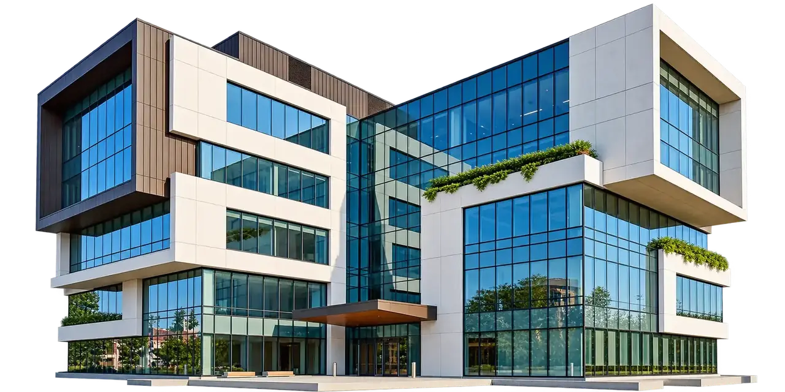
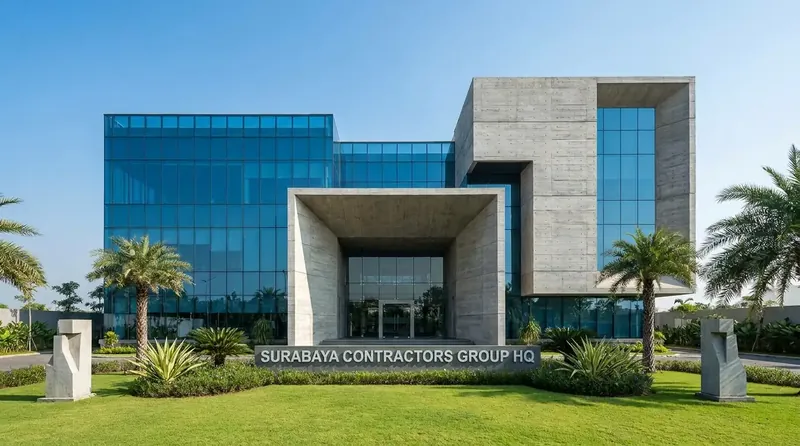

Jasa Arsitek Surabaya
Konsultasi, konsep desain, denah, tampak, visualisasi 3D, gambar kerja, struktur, MEP hingga RAB untuk rumah dan bangunan di Surabaya.
SelengkapnyaSolusi satu pintu untuk pembangunan rumah tinggal, gedung komersial, arsitektur, dan renovasi dengan transparansi RAB 100%, material SNI, serta pengawasan insinyur sipil berpengalaman.


Kontraktor Surabaya adalah perusahaan jasa konstruksi dan konsultan arsitektur terintegrasi satu pintu (one-stop solution) berbasis di Surabaya Timur yang melayani seluruh kawasan Jawa Timur.
Didukung oleh tim arsitek berlisensi, insinyur sipil berpengalaman, dan pengawasan mutu ketat di lapangan, kami memastikan setiap pembangunan rumah tinggal maupun gedung komersial berdiri kokoh, tepat waktu, dan bergaransi resmi.
Kepercayaan ratusan klien dibangun dari kualitas struktur standar SNI, transparansi anggaran, ketepatan waktu, dan garansi resmi.
Tim kami siap membantu mendiskusikan konsep rancang bangun dan estimasi terbaik sesuai bujet proyek Anda.
Rincian RAB dan BoQ terbuka per item pekerjaan tanpa markup sepihak dan bebas dari biaya siluman.
Struktur terjamin kokoh dengan pemilihan material bersertifikasi SNI serta pengawasan rutin insinyur sipil.
Jaminan sertifikat garansi struktur dan retensi pemeliharaan paska serah terima untuk ketenangan investasi Anda.
Dari diskusi awal hingga serah terima kunci, setiap langkah dirancang sistematis, transparan, dan terukur demi hasil konstruksi terbaik.
Diskusi kebutuhan ruang, konsep desain, dan rencana anggaran proyek.
Pengukuran presisi lahan, analisa kontur tanah, dan orientasi bukaan.
Visualisasi 3D realistis, denah ruang, dan gambar kerja DED lengkap.
Rincian anggaran biaya transparan, jadwal Kurva-S, dan kontrak resmi.
Pembangunan material SNI diawasi langsung oleh insinyur sipil.
Quality control akhir, penyerahan kunci, dan sertifikat garansi resmi.
Apa yang Kami Kerjakan
Kami menyediakan layanan konstruksi lengkap mulai dari perencanaan arsitektur hingga penyelesaian akhir dengan standar kualitas tinggi.
Konsultasi, konsep desain, denah, tampak, visualisasi 3D, gambar kerja, struktur, MEP hingga RAB untuk rumah dan bangunan di Surabaya.
Selengkapnya
Jasa bangun rumah 1 lantai dan 2 lantai di Surabaya dengan material berkualitas, pengerjaan tepat waktu, dan garansi konstruksi.
Selengkapnya
Jasa konstruksi bangunan komersial: ruko, kantor, restoran, toko, dan gudang di Surabaya dan wilayah Jawa Timur.
Selengkapnya
Renovasi rumah, ruko, dan gedung di Surabaya. Mulai dari renovasi fasad, penambahan lantai, perbaikan struktur hingga renovasi total.
Selengkapnya
Desain interior untuk rumah tinggal, apartemen, kantor, cafe, dan ruko di Surabaya. Konsep estetis dan fungsional sesuai kebutuhan.
Selengkapnya
Penyusunan Rencana Anggaran Biaya (RAB) yang detail dan transparan untuk perencanaan anggaran pembangunan dan renovasi yang presisi.
SelengkapnyaTestimoni Klien
Kepuasan dan kepercayaan klien di Surabaya & Jawa Timur adalah bukti komitmen kami dalam menghadirkan mutu konstruksi terbaik.
"Kontraktor Surabaya sangat profesional dari tahap konsep denah hingga pembangunan selesai. Transparansi RAB dan ketepatan timeline sangat membantu kami mengontrol anggaran."
"Hasil desain interior dan fasad rumah sangat memukau. Rumah lama kami disulap menjadi hunian modern tropis yang adem dan mewah di CitraLand. Sangat puas dengan layanannya."
"Pengawasan konstruksi di lapangan sangat ketat dan teratur. Setiap minggu selalu ada laporan progres berkala. Sangat recommended untuk kontraktor ruko dan komersial."
"Konsep desain villa tropis modern yang dibuat tim Kontraktor Surabaya benar-benar melampaui ekspektasi. Pencahayaan alami dan tata ruangnya sangat apik."
"Tim sangat komunikatif dan memahami kebutuhan bisnis F&B kami. Desain interior estetik dan instagramable dengan efisiensi tata ruang yang optimal di Sidoarjo."
"Dari denah 2D, visual 3D photorealistic, hingga gambar kerja struktur dan MEP sangat detail. Pembangunan selesai tepat waktu sesuai jadwal tanpa biaya membengkak."
Galeri Karya
Lihat hasil karya pembangunan rumah, ruko, gedung komersial, renovasi, dan desain interior kami di Surabaya dan sekitarnya.
Masih ada pertanyaan seputar biaya, proses pembangunan, atau konsultasi proyek? Hubungi tim kami langsung melalui WhatsApp.
Tanya LangsungKonsultasikan kebutuhan desain arsitektur, denah 3D, renovasi, atau pembangunan fisik dari nol bersama tim ahli Kontraktor Surabaya. Dapatkan survey lokasi dan estimasi awal secara gratis.